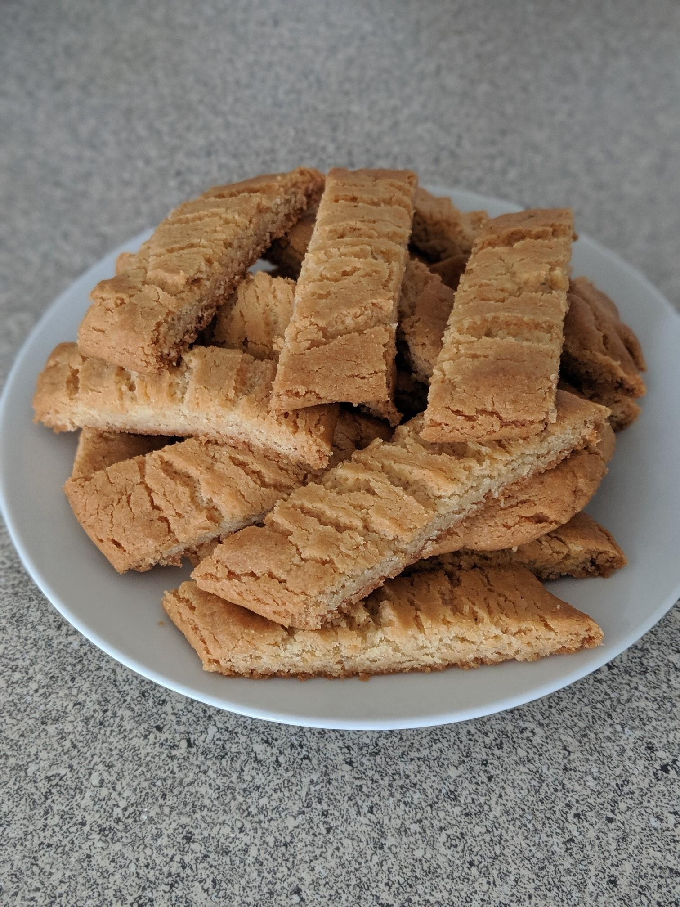

Recept på kolakakor
Jättemumsiga kolakakor som är lätta att baka och gillas av alla! Med en blandning av smör, socker och sirap får kakorna seg och härlig konsistens. Passar utmärkt till både saft och kaffe.

Här är listan av ingredienser
- 100g smör
- 1dl socker
- 1msk vaniljsocker
- 1msk sirap
- 21/2 dl vetemjöl
- 1tsk
Gör så här
- Låt smöret bli mjukt i mikron. Blanda med socker, vaniljsocker, sirap, vetemjöl och bakpulver, gärna i en matberedare eller med en elvisp. Arbeta degen tills den går ihop och tryck ihop det sista med händerna.
- Halvera degen. Forma till 2 rullar, ca 30 cm långa (för 30 st). Lägg dem på bakpappersklädd plåt och platta ut dem till ca 0,5 cm.
- Grädda mitt i ugnen i 175°C i 10-12 minuter. Ta ut plåten och skär kakorna diagonalt.